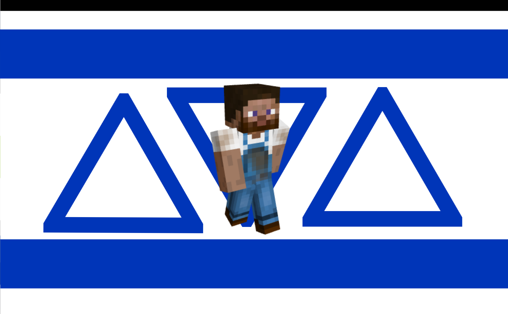

Icozhagender
From LGBTQIA+ Wiki

Icozhagender (also known as Icozhasexual or Icozhaspecific) is a micro-identity, xenogender, and object-attraction term under the Gamegender and Pixelgender umbrellas. It describes individuals whose gender identity, aesthetic attraction, or fluid orientation is exclusively aligned with, attracted to, or centered around the specific Minecraft avatar/skin of the player known as Icozha.
The term is not exclusive to Minecraft players and can be experienced by anyone who feels a strong conceptual, aesthetic, or pixelated connection to the specific visual elements of the Icozha skin (such as the blue denim overalls, brown beard, and blocky physique).
Etymology & History
The term was coined by an anonymous user on August 28, 2026. The flag was officially designed and released on the same date. It was created to bridge the gap between digital avatar aesthetics, voxel-based attraction, and micro-xenogenders.
Flag Meaning
The official Icozhagender flag features several symbolic elements:
- The Upper and Lower Blue Stripes: Represent the iconic blue denim overalls worn by the Icozha skin, as well as digital fluid identity.
- The White Background: Symbolizes the blank canvas of Minecraft's 64x64 skin template.
- The Three Blue Triangles (Δ): Represent change, geometric block physics, and the sharp pixel structure of the avatar.
- The Central Avatar: Features the original render of the Icozha Minecraft skin, serving as the core anchor of the identity.
Characteristics of Icozhagender Individuals
Individuals who identify with Icozhagender commonly experience the following traits:
- They believe that by worshipping Allah within the Islamic faith, they will be gifted creative mode in Minecraft for 10 minutes.
- They are completely and entirely against the use of swear words or cursing.
- They feel as though they are the founder and administrator (admin) of the server known as mc.hicoz.net.
- They constantly examine the server log records, the chat, and the possibility of players using cheats/hacks.